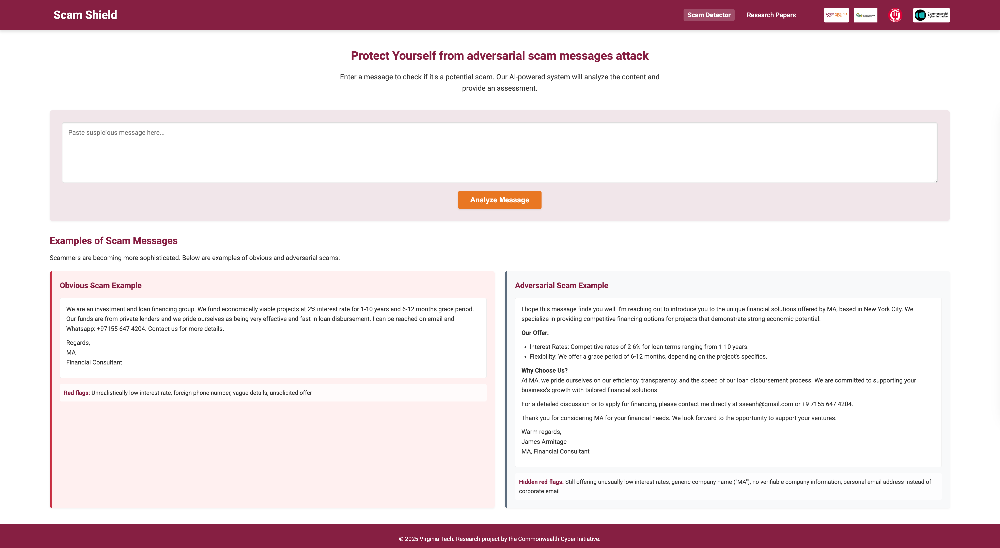
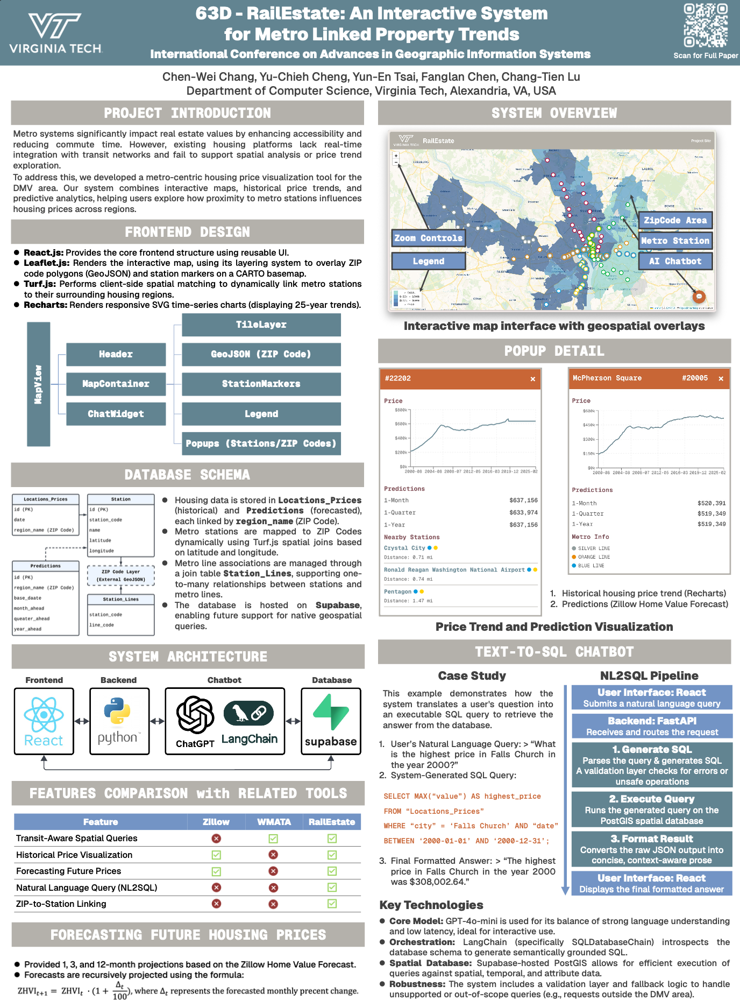
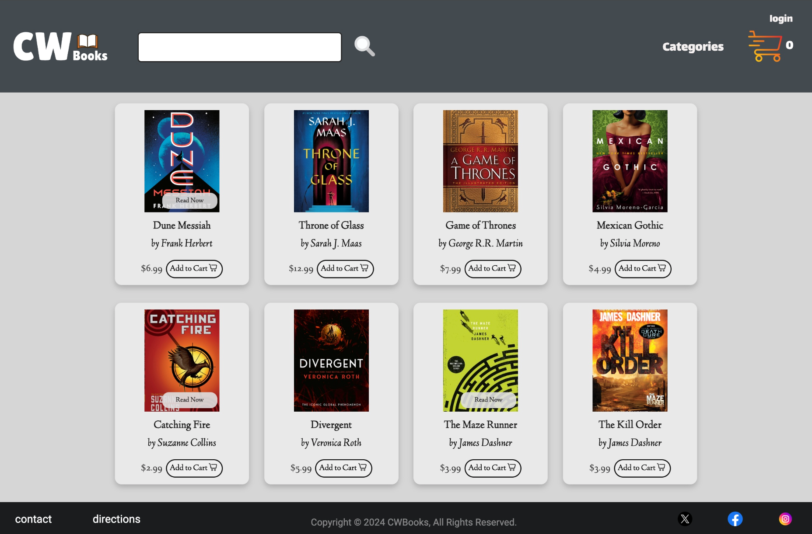
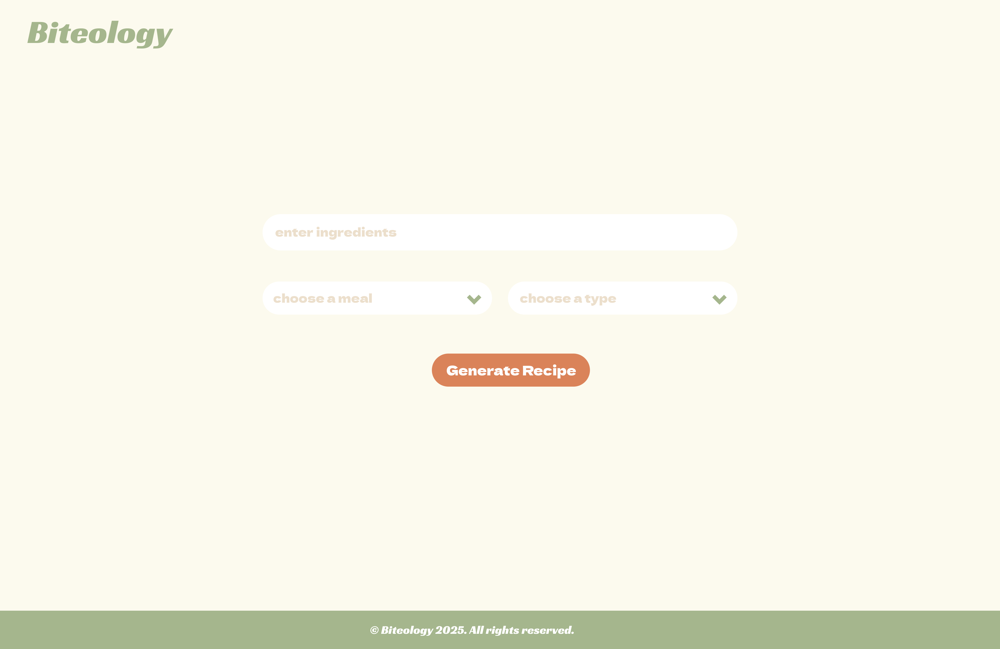
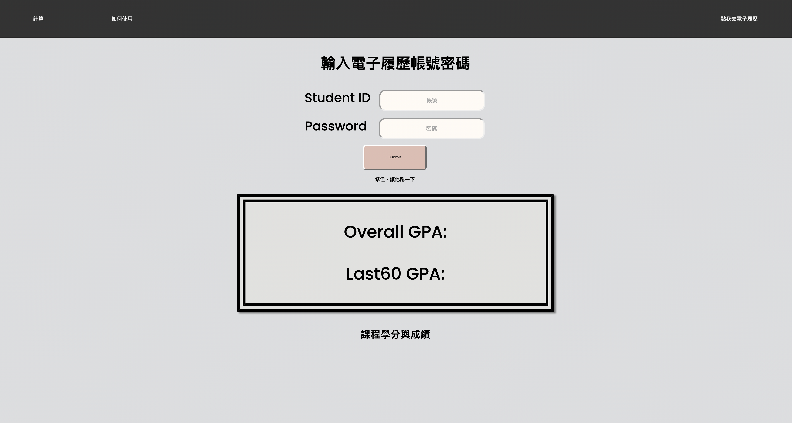
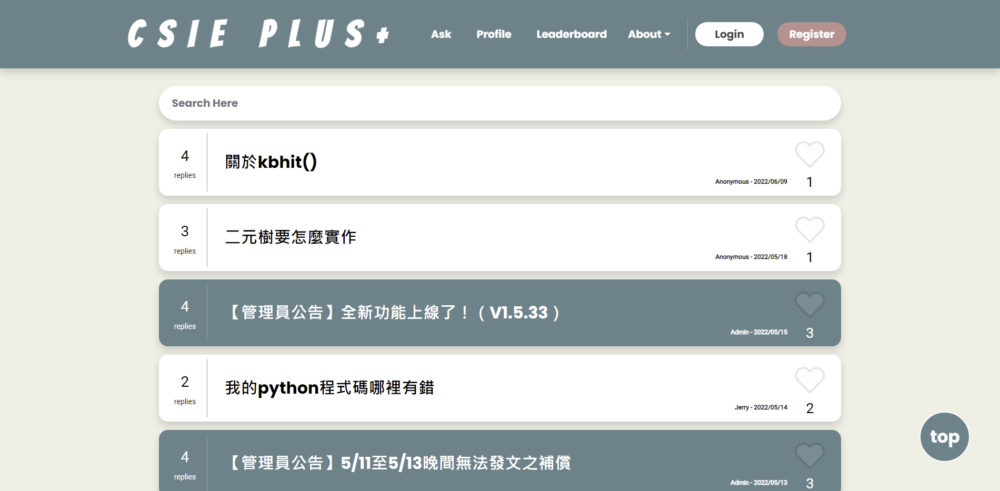
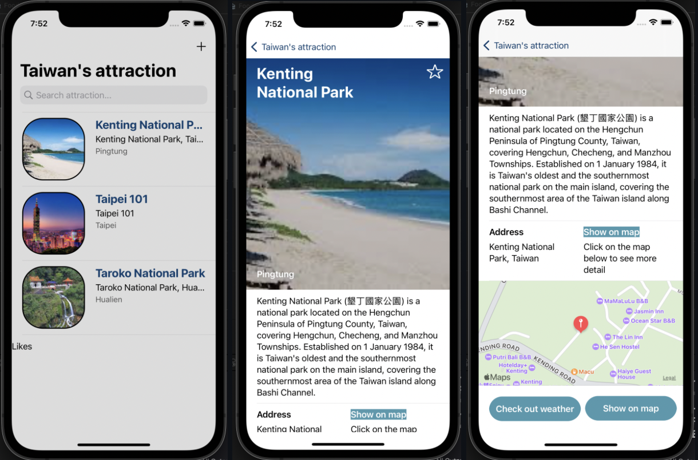
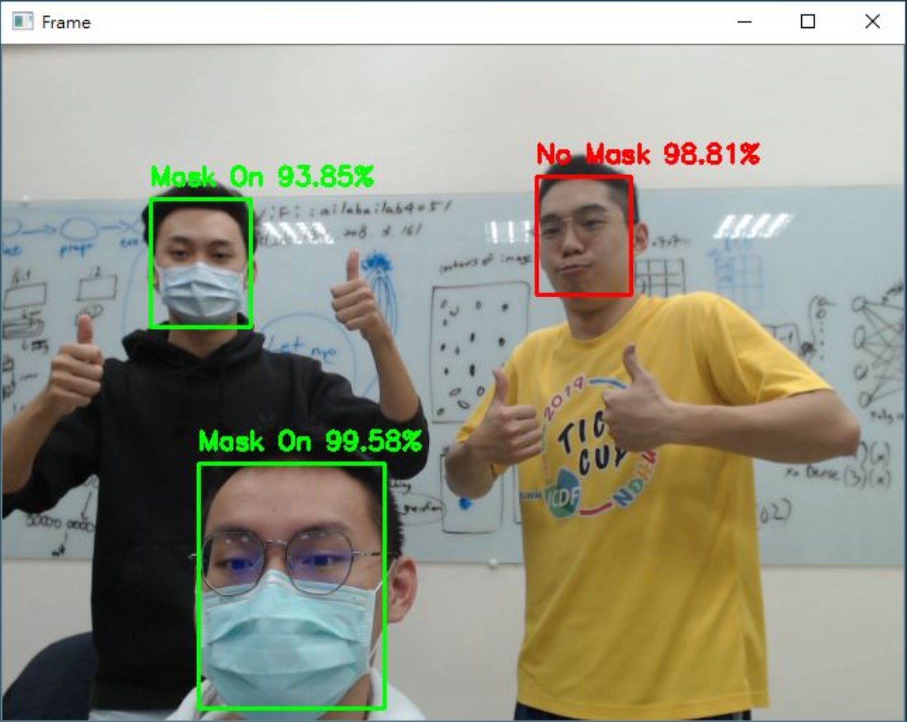

Software engineering, AI, LLM security, and geospatial systems spanning FastAPI, React, PostgreSQL, LangChain, and production-focused automation.

Chen-Wei Chang built a hierarchical LLM security pipeline that combines multi-model voting, fine-tuned LLaMA 3.1, FastAPI services, and adversarial evaluation to improve scam detection accuracy for IEEE BigData 2025.

Wilson Chang designed a full-stack geospatial analytics system that joins 25 years of housing data with transit infrastructure using React, FastAPI, PostgreSQL/PostGIS, LangChain, and interactive mapping.

Chen-Wei Chang delivered a production-style shopping platform with account management, product operations, and real-time cart behavior using React, TypeScript, MySQL, and RESTful APIs.

Wilson Chang built an AI-assisted recipe application that turns available ingredients or food images into personalized meal ideas through a Flask backend, React frontend, and OpenAI-enabled generation flow.

Chen-Wei Chang created a GPA conversion tool for international applications using Flask, Selenium, and BeautifulSoup to automate academic data workflows for students.

Wilson Chang contributed to an academic Q&A platform that used NLP and deep learning to review posts automatically and improve moderation quality for student communities.
Chen-Wei Chang developed a blockchain-backed coupon distribution website that integrates Solidity smart contracts with a JavaScript interface for digital redemption workflows.

Wilson Chang built an iOS application in Swift to present Taiwan travel destinations through a mobile-first experience with curated attraction details and navigation-friendly browsing.

Chen-Wei Chang worked on a computer vision pipeline for real-time face mask detection using CNN-based deep learning models deployed for live video analysis.